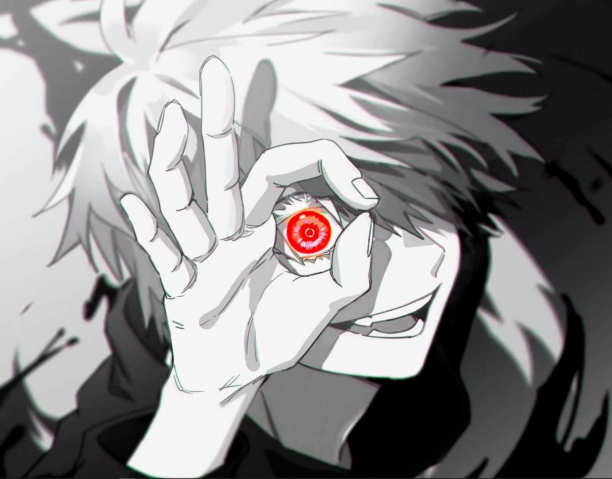
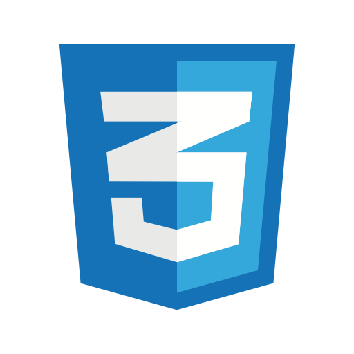
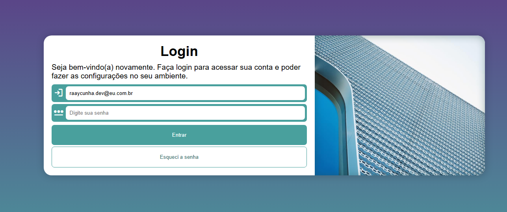
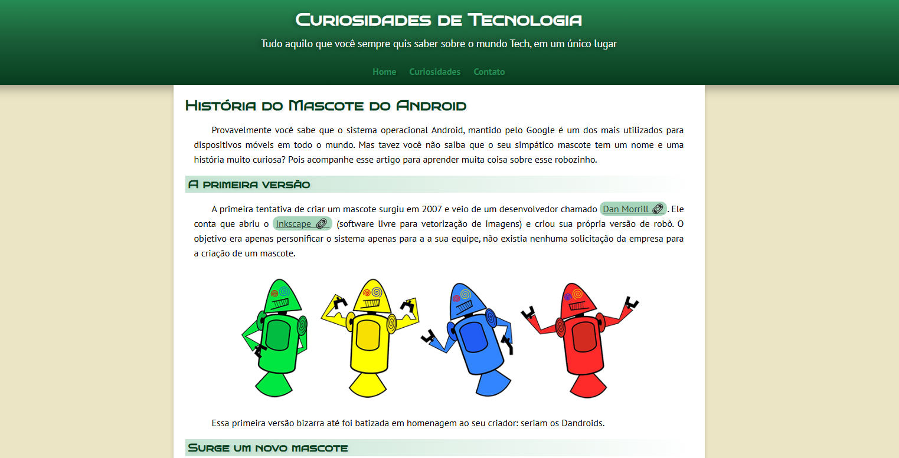
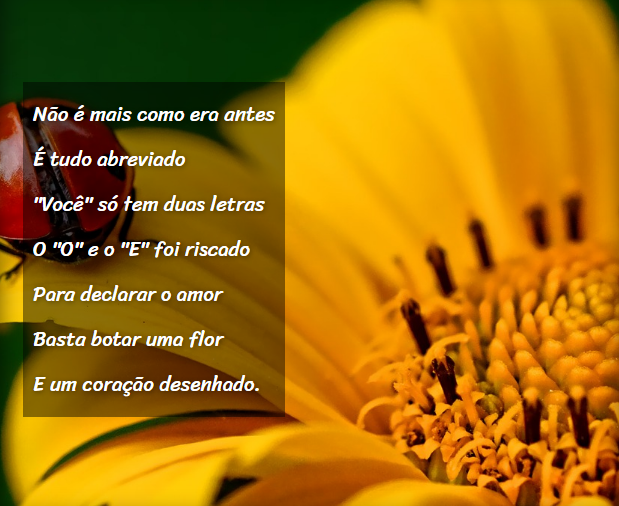

Ray Gonçalves
Desenvolvedor Front-end, minha base técnica foi feita através de estudo em cursos livres, onde venho dominando tecnologias como HTML/CSS & JavaScript através de projetos práticos. Sou movido pela curiosidade e pelo aprendizado. Atualmente, dedico meu tempo ao estudo de tecnologias modernas da web para criar interfaces intuitivas e responsivas. No momento, estou desenvolvendo projetos responsivos e interativos, que podem ser conferidos na seção de projetos abaixo.
Tecnologias
.")

Projetos

2025
Projeto Tela de Login
Desenvolvimento de uma interface de autenticação focada em experiência do usuário (UX). O projeto explora o uso de formulários semânticos, validação de campos com JavaScript e total responsividade, garantindo que o acesso seja fluido tanto em dispositivos móveis quanto em desktops.

2025
Projeto Android
Um site informativo que utiliza uma estrutura de navegação dinâmica para contar a história do sistema operacional. O destaque deste projeto é a organização de conteúdos densos de forma escaneável, utilizando as melhores práticas de HTML5 semântico e adaptação de layout para diferentes densidades de tela.

2025
Projeto Cordel
Exploração visual utilizando efeitos de Parallax modernos puramente com CSS. Este projeto foca na apresentação de conteúdos artísticos (poesia), utilizando imagens de fundo fixas que criam uma sensação de profundidade durante a rolagem, mantendo a performance e o tempo de carregamento otimizados.